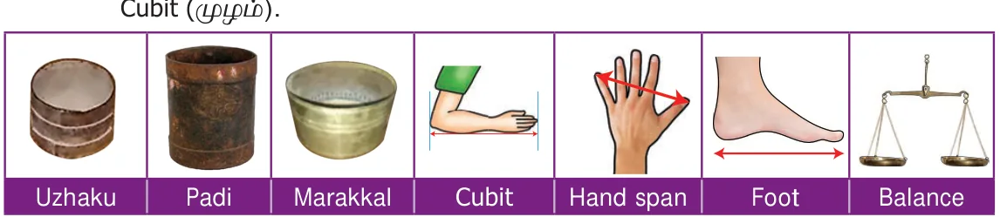
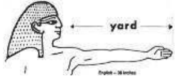
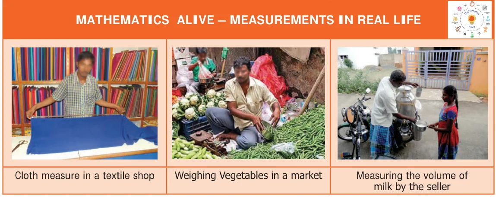

<!DOCTYPE html>
<html lang="en">
<head>
<meta charset="UTF-8">
<meta name="viewport" content="width=device-width,initial-scale=1">
<title>2.1 Introduction — Measurements</title>
<meta name="description" content="Class 6 Mathematics · Term 2 · Measurements · 2.1 Introduction">
<link rel="icon" href="data:image/svg+xml,<svg xmlns='http://www.w3.org/2000/svg' viewBox='0 0 100 100'><text y='.9em' font-size='90'>📘</text></svg>">
<link rel="stylesheet" href="../../../assets/book.css">
<link rel="stylesheet" href="https://cdn.jsdelivr.net/npm/katex@0.16.11/dist/katex.min.css" crossorigin="anonymous">
</head>
<body>
<header class="topbar">
<div class="topbar-in">
  <div class="crumb">
    <span class="c1"><a href="../../../index.html">Library</a> · <a href="../../index.html">Class 6 Mathematics · Term 2</a></span>
    <span class="c2">Measurements · 2.1 Introduction</span>
  </div>
  <a class="tb-btn" data-nav="prev" href="../../01-numbers/13-summary/index.html" title="Summary">←</a>
  <details class="drawer"><summary class="tb-btn" title="Sections in this chapter">☰</summary>
<div class="drawer-panel"><div class="dh">Measurements</div><a href="../01-introduction-2.1/index.html" aria-current="page">2.1 Introduction</a><a href="../02-recap-2.2/index.html">2.2 Recap</a><a href="../03-conversions-within-the-metric-system-2.3/index.html">2.3 Conversions within the Metric System</a><a href="../04-fundamental-operations-on-quantities-with-different-units-2.4/index.html">2.4 Fundamental Operations on Quantities with Different Units</a><a href="../05-exercise-2.1/index.html">Exercise 2.1</a><a href="../06-measures-of-time-2.5/index.html">2.5 Measures of Time</a><a href="../07-ict-corner/index.html">ICT CORNER</a><a href="../08-exercise-2.2/index.html">Exercise 2.2</a><a href="../09-exercise-2.3/index.html">Exercise 2.3; Miscellaneous practice Problems</a><a href="../10-summary/index.html">Summary</a></div></details>
  <a class="tb-btn" data-nav="next" href="../../02-measurements/02-recap-2.2/index.html" title="2.2 Recap">→</a>
  <button class="tb-btn" data-theme-toggle title="Toggle light / dark" aria-label="Toggle light or dark theme">◐</button>
</div>
<div class="progress"><span style="width:29.8%"></span></div>
</header>
<main class="wrap">
<div class="sec-head">
  <p class="eyebrow"><a href="../index.html">Chapter 2 · Measurements</a></p>
  <h1>2.1 Introduction</h1>
  <p class="sec-meta">Textbook pages 1–2 · 5 figures</p>
</div>
<article class="prose">
<h2 id="s-chapterchapter">CHAPTERCHAPTER</h2>
<h2 id="s-2">2</h2>
<h2 id="s-measurementsmeasurements">MEASUREMENTSMEASUREMENTS</h2>
<h2 id="s-learning-objectives">Learning Objectives:</h2>
<ul class="qlist">
<li><span class="mk">●</span><span class="lt">To understand the position of decimal point in the conversion of smaller unit to larger</span></li>
</ul>
<p>unit and vice versa.</p>
<ul class="qlist">
<li><span class="mk">●</span><span class="lt">To do the four fundamental operations on quantities of different units.</span></li>
<li><span class="mk">●</span><span class="lt">To read time in a clock and convert the 12 hour format to the 24 hour format and vice</span></li>
</ul>
<p>versa.</p>
<ul class="qlist">
<li><span class="mk">●</span><span class="lt">To find duration between 2 given time instances.</span></li>
<li><span class="mk">●</span><span class="lt">To do conversion of units of time.</span></li>
</ul>
<p>Let us listen to the following conversation between a teacher and a student: Teacher: Have you ever noticed your mother buying knotted flowers? How is it measured? Student: Yes teacher. The flower seller measures the string of flowers using her/his hand. She/He measures in cubit (முழம் in tamil). Teacher: If you measure the same using your hand, what would you observe? Student: It would measure more than one cubit,because my hand is shorter. Teacher: Yes, how far is your house from the school? Student: Just 100 feet, teacher. Teacher: How do you buy rice, milk, cloth from the shop? Student: We buy the rice in kilogram, milk in litre , cloth in metre. Teacher: How much time do you spend on your homework? Student: I usually spend an hour to do my homework. Teacher: How do you measure height and weight? Student: Height in centimetre, Weight in kilogram. Teacher: Have you heard about any other measures used in earlier days? Student: My grandparents talk of measures used in their days such as Padi (படி), Uzhakku (உழக்கு), Aazhakku (ஆழாக்கு), Marakkal (மரக்்கால்), Feet (அடி), Span (சாண்),</p>
<figure class="fig side-fig"></figure>
<figure class="fig table-fig wide"></figure>
<p>Teacher: Then why do we use kilogram, metre, litre instead of those units? Student: I don’t know teacher, please tell us why?. Teacher: As we started trading world wide ,we found people in various places using different measures. The 'kings foot’, the ‘kings arm’ and the 'yard' (the distance between the tip of his nose to the tip of the thumb) were used as units to measure small length in various places. As these lengths differed from person to person and place to place, it was necessary to standardize measurements throughout the world. The metric measures were defined in 1971 by the General Conference of Weights and Measures.</p>
<figure class="fig side-fig"></figure>
<p>The basic metric units are Metre, Litre, Gram, Seconds and so on. It is based on the decimal system (10), which is easier to convert from one unit to another. We use kilometre, metre, centimetre, millimetre to measure length; kilogram, gram, milligram for weight and kilolitre, litre, millilitre for volume in shops, schools ,office, railways and many other places. An eye blink represents a second; heart beats are counted per minute; working time of an employee is calculated in hours.</p>
<figure class="fig table-fig wide"></figure>
<h2 id="s-recap">Recap</h2>
<p>Universally accepted basic metric units are \tfrac{3}{4} Length in metre. \tfrac{3}{4} Weight in gram. \tfrac{3}{4} Capacity (volume) in litre.</p>
<p>We use different metric units for different sizes in various situations</p>
<figure class="fig table-fig wide"></figure>
<aside class="sidenote"><p>MEASUREMENTS</p></aside>
</article>
<nav class="pager"><a class="" data-nav="prev" href="../../01-numbers/13-summary/index.html"><span class="dir">← Previous</span><span class="t">Summary</span><span class="ch">Numbers</span></a><a class="nx" data-nav="next" href="../../02-measurements/02-recap-2.2/index.html"><span class="dir">Next →</span><span class="t">2.2 Recap</span><span class="ch">Measurements</span></a></nav>
</main><footer class="site">Generated from the source textbook PDFs · text, figures and exercises belong to their respective publishers.</footer><script defer src="https://cdn.jsdelivr.net/npm/katex@0.16.11/dist/katex.min.js" crossorigin="anonymous"></script>
<script defer src="https://cdn.jsdelivr.net/npm/katex@0.16.11/dist/contrib/auto-render.min.js" crossorigin="anonymous"
  onload="renderMathInElement(document.body,{delimiters:[
    {left:'\\(',right:'\\)',display:false},
    {left:'$$',right:'$$',display:true},
    {left:'\\[',right:'\\]',display:true}],throwOnError:false,ignoredTags:['script','noscript','style','textarea','pre','code']})"></script>
<script src="../../../assets/book.js"></script>
<script defer src="../../../../assets/search.js"></script>
<script defer src="../../../../assets/screenshot.js"></script>
</body>
</html>
